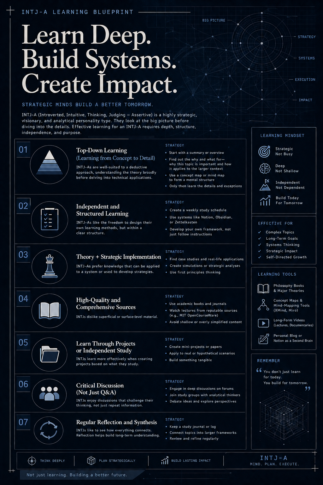
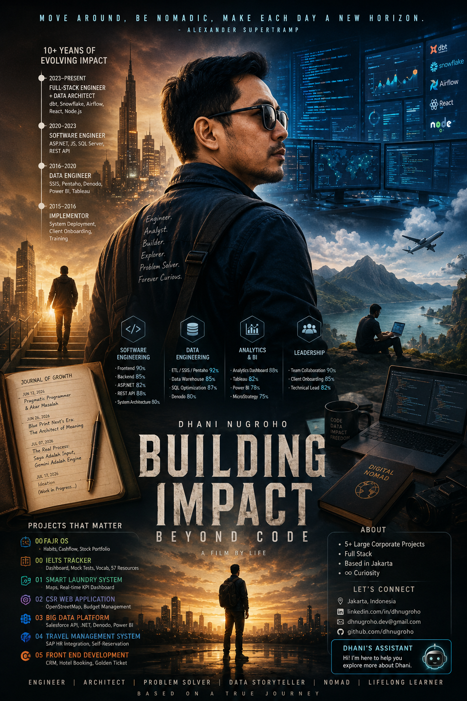

Portfolio
A curated collection of projects across manual design vector, web design and engineering.

Vector Illustration
Silhouette and vector art designed in Corel Draw for various creative projects.

Travel & SAP Settlement
Corporate travel engine with multi-level DPH approval, self-booking & SAP ERP integration.

Digital Portfolio
Custom Bootstrap-based portfolio with tailored HTML & CSS design work.

Employee Rewards CRM
Mobile-responsive employee rewards & compensation portal with payslip integration.

Hotel Reservation
Intuitive hotel booking engine and room reservation flow built with responsive HTML & CSS.

FMCG Loyalty CRM
Multinational loyalty CRM with gamified spin wheel and real-time serial validation.
Project Showcase
End-to-end projects from architecture to delivery — each with a live UI mockup re-build from the actual screens.
Custom ERP & CRM Enterprise Data Pipeline on ERPNext
Multi-unit financial data was trapped in non-standard spreadsheets requiring error-prone manual reconciliation. Operating as a solo, client-embedded engineer, I led iterative requirements sessions across business units and architected a decoupled Python data pipeline on a custom Frappe/ERPNext fork—accommodating a major mid-project scope expansion into CRM. The automated pipeline successfully ingested and validated 1,840 out of 1,847 journal rows (99.6% accuracy) in a single batch while preserving core ERP upgradeability with zero merge conflicts.
- 99.6% batch ingestion accuracy: 1,840 of 1,847 accounting rows automatically validated and posted in a single batch run.
- 0 core merge conflicts: 100% decoupled custom app architecture enabling seamless bi-annual upstream ERPNext syncing.
- ~85% reduction in data prep turnaround (est.): Replaced manual multi-BU spreadsheet consolidation with an automated API ingestion engine.
-
Decoupled Ingestion Architecture:
Built a standalone
custom_excel_pipelineFrappe app usingbench new-app, isolating all custom logic from ERPNext core. Upstream sync withfrappe/erpnextruns every 6 months with near-zero merge conflicts. -
Excel Data Cleansing Engine (Python):
Developed a
@frappe.whitelist()API endpoint usingpandasandopenpyxlto normalize column names, strip whitespace, standardize date formats, drop empty rows, and validate data types viapydanticbefore any database write. -
Frappe ORM → Journal Entry Mapping:
Each cleaned row is mapped to ERPNext
Journal EntryorSales InvoiceDocTypes viafrappe.get_doc(). Debit/credit imbalances and missing account codes are caught by ERPNext's native validator — no custom error handling required for accounting rules. - CRM Lead Pipeline & RBAC: Implemented a Kanban-style lead pipeline with custom DocTypes, dynamic workflow states, and role-based access control (RBAC) scoped to organizational unit and module operation level. Supports Sales, Finance, and Operations roles with independent permission matrices.
-
Structured Error Logging & Audit Trail:
Per-row error capture (
f"Row {index+1}: {str(e)}") returns a structured JSON response withsuccess_countanderror_log, enabling partial-batch processing — failed rows are logged without rolling back successful entries.
Fajr OS — Habits Tracker
A comprehensive life tracking system integrated with behavioral psychology and cognitive frameworks to serve as a mindful engine for self-actualization.
- Tab Ringkasan: At-a-glance dashboard mapping all life areas with progress
rings.
Insight: Meredam cognitive load melalui visualisasi holistik terpusat. - Tab Activity Track: Discipline phases tracker (Accident to Last Destiny)
with
milestone markers.
🔒 Advanced: Neuroplasticity Buffer — Fokus pada Recovery Rate untuk menjaga konsistensi habit. - Tab Daily Task: Time-blocked routines, sleep logs, and reflection
navigation
strips.
Insight: Micro-Journaling Slot — Evaluasi harian berbasis dikotomi kendali (Stoikisme). - Tab Year Achievements: Long-term roadmap with automated age and target
fill-rates calculation.
Insight: Pemanfaatan Temporal Landmarks untuk menjaga kontinuitas motivasi intrinsik. - Tab Big Plan Timeline: Flexible monthly project timeline with interactive
milestone cells.
🔒 Advanced: Energy-Budget Mapping — Alokasi kapasitas fokus untuk preventif burnout. - Tab Monthly Cashflow: Financial tracker separating fixed investment
commitments
from daily expense.
Insight: Emotional Impulse Tagging — Analisis korelasi kondisi psikologis dengan pola konsumsi. - Tab Portofolio Saham: Unified investment hub covering assets P&L,
dividends,
and risk profiling.
🔒 Advanced: Psychological Bias Ledger — Log tesis investasi untuk meredam FOMO & impulsivitas pasar. - 🔒 Tab Thought Laboratory: A dedicated sandbox for personal philosophy, CBT
cognitive mapping, and brain-dump.
Purpose: Ruang katarsis digital untuk memproses kompleksitas pemikiran secara objektif.
IELTS Tracker
A specialized study planning and progress tracking dashboard tailored for IELTS preparation. Engineered to monitor study hours, test benchmarks across 6 milestone phases, vocabulary acquisition, daily schedules, and resource management to achieve a target overall band score of 7.5.
- Tab Dashboard: Overall band, score per skill, total study hours, Month 1 & 2 day progress, 7-day streak, and settings for start/exam dates.
- Tab Months: 30-day tracking for Listening & Reading focus, and 30-day tracking for Writing & Speaking. Log hours, focus materials, speaking/writing maintenance, and vocabulary.
- Tab Mock Test: 6 progress slots (Baseline, Week 2, Month 1, Week 6, Month 2, Before Test) with auto-calculated overall band compared to a 7.5 target.
- Tab Vocab: Interactive notebook logging word definitions, sentence examples, source origin, and usage status.
- Tab Jadwal & Resources: Daily scheduling plus a directory of 57 resources (Listening: 11, Reading: 12, Writing: 14, Speaking: 12, Vocab: 8, Mock Tests: 8).
Multi-Regional Laundry Operations & SLA Dashboard
A growing laundry franchise operating across several major regions of Indonesia lacked centralized operational visibility, resulting in delayed incident responses and queue bottlenecks between customers and laundry admins. Through an Agile-aligned solo delivery model, I gathered requirements directly across three organizational tiers (HQ, Regional, Branch) and built a real-time operational dashboard—adapting the scope in-flight to integrate WhatsApp anomaly alerts and a strict 2-hour SLA escalation engine. During its pilot phase, the system actively monitored dozens of daily transactions in real time, tracking the end-to-end laundry queue cycle and customer-admin handoffs with unified, drill-down KPI visibility across regional branches.
- Multi-regional network & 1,000+ active users: Unified under a single role-based operational dashboard with sub-second KPI updates across major Indonesian regions.
- Real-time laundry queue cycle tracking: Monitored dozens of daily transactions during pilot phase with live customer-to-admin handoff tracking.
- 50% faster SLA response time (est.): Critical customer complaint resolution window reduced from 4 hours to under 2 hours via automated WhatsApp alerts.
- Regional branch map: Interactive bubble markers and status indicators covering major operating regions across Indonesia.
- Customer-Admin queue tracking: Live monitoring of the complete laundry queue cycle from drop-off to fulfillment.
- Complaint SLA escalation: Real-time ticket management with automated threshold alerting and manager re-routing.
- Branch management engine: Full CRUD operations, capacity planning, and regional manager assignment.
- Live KPI tracking: Order completion velocities, queue turnaround rates, and branch revenue analytics.
- Smart notification pipeline: Proactive anomaly triggers dispatched instantly via WhatsApp and email.
- 3-Tier hierarchy: HQ Executive → Regional Manager → Branch Lead RBAC permission matrices.
Enterprise CSR Budget Management & Geospatial Allocation Platform
Corporate CSR capital allocation relied on disconnected spreadsheets with subjective scoring and zero auditability for executive stakeholders. Working directly with field program officers and top management as a single contributor, I delivered an end-to-end CSR governance platform featuring OpenStreetMap geospatial mapping and dynamic priority scoring—incorporating major post-pilot change requests including an audit monitoring module. The system provides complete transparency across planning, actualization, and multi-tier executive approval workflows.
- 100% auditable fund allocation: Complete digital governance tracking budget planning versus actual realization across nationwide target zones.
- Multi-tier executive approval workflow: Streamlined top management sign-offs from multi-week manual routing to structured digital approvals.
- Data-driven priority scoring: Algorithmic social mapping ranking community needs to eliminate subjective budget bias.
- Geospatial social mapping: Interactive map visualizer mapping program areas and village metrics across Indonesia.
- Dynamic priority scoring: Formula-based priority allocation ranking community aid urgency.
- Annual planning & implementation: Milestone progress tracking and realization dashboards.
- Budget variance control: Pre-implementation plan vs actual expenditure monitoring with audit logs.
- C-Suite approval matrix: Multi-tiered digital sign-off pipeline for top executive governance.
- Post-pilot audit trail module: Complete historical change logs accommodated as a major change request.
Enterprise Big Data Virtualization & API Sync Platform
Fragmented enterprise data sources forced business analysts into hours of manual data preparation, generating cross-departmental inconsistencies. As an embedded solo technical lead collaborating across BI and operational units, I architected a centralized data virtualization and multi-dataset .NET ingestion platform—incorporating a major mid-delivery Salesforce API background sync pipeline. The unified pipeline delivers clean, validated datasets directly into Power BI, Tableau, and MicroStrategy dashboards.
- Multi-system data virtualization: Consolidated disparate enterprise databases and Salesforce CRM into a unified queryable layer via Denodo and SSIS.
- ~70% reduction in reporting preparation overhead (est.): Automated recurring data extraction, validation, and loading cycles for BI analysts.
- Multi-engine BI delivery: Seamless integration powering synchronized executive dashboards across Power BI, Tableau, and MicroStrategy.
- Salesforce API background sync: Automated real-time CRM data extraction pipeline (major change request).
- Multi-dataset web uploader: High-throughput .NET ingestion engine with pre-upload type validation.
- Flexible write strategies: Configurable Insert-Only and Periodic Delete-Insert modes per dataset.
- Excel cleansing validator: Automated normalization catching spreadsheet structural errors pre-load.
- Denodo data virtualization: Abstracted multi-source relational layer without heavy physical replication.
- Cross-BI delivery pipeline: Unified models driving Power BI, Tableau, and MicroStrategy reports.
Enterprise Corporate Travel Management & SAP Settlement Engine
Enterprise business travel workflows suffered from prolonged email approval chains, delayed expense settlements, and unintegrated ERP vendor payments. Conducting iterative requirement elicitation across HR, Finance, and employee user groups, I engineered an end-to-end travel platform integrated with SAP and core HR systems—adapting scope to build complete flight, hotel, and rail self-reservation modules. The automated system digitized the entire trip lifecycle from pre-travel approval to final ledger settlement.
- End-to-end trip lifecycle digitization: Unified travel planning, multi-level DPH approval, self-booking, and expense settlement into a single portal.
- Direct SAP & HR system integration: Automated vendor payment processing and employee leave synchronization without manual data reentry.
- ~60% faster reimbursement settlement turnaround (est.): Replaced manual paper receipts and email chains with structured digital verification workflows.
- Travel planning & request: Standardized employee submission for planned and ad-hoc business travel.
- DPH approval matrix: Multi-level hierarchy (Department Head → Executive → HR Director).
- In-app self reservation: Direct flight, hotel, and train booking engine (major change request).
- Settlement & audit: Dual-entry verification for travelers and finance settlement officers.
- Direct SAP ERP integration: Automated vendor payment vouchers and accounting ledger sync.
- HR leave integration: Synchronized leave quotas, allowance policies, and divisional reporting.
Multi-Client Responsive Frontend & Enterprise CRM Systems
Three distinct organizations across FMCG, corporate HR, and hospitality required tailored, high-converting digital interfaces under aggressive market timelines. Operating as a single-contributor frontend architect, I engaged directly with cross-border stakeholders—managing timezone gaps and sensitive payroll constraints—to deliver interactive consumer gamification, employee rewards portals, and reservation engines. All three solutions were delivered with responsive web architectures integrated seamlessly into robust backend APIs.
- 3 diverse industry domains delivered solo: Successfully shipped high-stakes systems spanning multinational FMCG loyalty, internal HR tech, and hospitality booking.
- Cross-border asynchronous delivery: Orchestrated end-to-end discovery and implementation with overseas teams (Philippines) without communication friction.
- 100% mobile-responsive user engagement: Powered high-traffic interactive features including real-time serial code validation, spin-to-win mechanics, and secure e-reward payout views.
- Fortune (Philippines): Golden Ticket CRM with serial code validation & UGC contest engine.
- Interactive gamification: Real-time Spin Wheel and instant pack code redemption modules.
- Employee Rewards CRM: Fully responsive mobile web portal for corporate rewards & compensation.
- E-Reward engine: Integrated payslip breakdowns, benefits calculators, and employee statements.
- Hotel Reservation System: Dynamic property listings, detailed room cards, and frictionless booking.
- Universal stack: Responsive HTML5/CSS3/JavaScript frontend architecture tied to .NET backends.
Career Timeline
10+ years of progressive growth across implementation, data engineering, and software development.
Full-stack Engineer
Evolved into a hybrid Full-stack + Data role — architecting data platforms, building analytics engineering pipelines, and designing end-to-end data infrastructure that bridges software systems and business intelligence.
Software Engineer
Software architecture, frontend & backend development, and testing. Led full-stack development across multiple enterprise web applications as both individual contributor and technical lead. Delivered CSR platform, Big Data Uploader, and Travel Management System.
Data Engineer
Designed and maintained data pipelines, ETL processes, database optimization, and analytics. Built enterprise data warehousing solutions using SSIS, Pentaho (Kettle), and Denodo for data virtualization feeding Power BI, Tableau, and MicroStrategy dashboards.
Implementor
System deployment, client onboarding, and user training. Laid the foundation of enterprise software delivery through hands-on implementation and client-facing technical support.
Skills
A broad technical stack spanning software engineering, data architecture, and business intelligence.
| Skill / Task | Utility Type | Description |
|---|---|---|
|
|
Ingestion / Cleansing | Automated batch ingestion, validation (pandas, pydantic, openpyxl) & ORM mapping |
|
|
Integration / Transformation | Microsoft's drag-and-drop ETL tool for enterprise data pipelines |
|
Pentaho (Kettle)
|
Integration / Transformation | Open-source, flexible ETL development for complex workflows |
|
|
Integration / Transformation | Enterprise-grade data integration, big data, and cloud transformation |
|
|
Integration / Orchestration | Cloud-based data integration service for orchestrating and automating data movement and transformation |
|
|
BI Enablement | Structuring and modeling data for Power BI, Tableau & MicroStrategy |
|
Data Virtualization
|
Real-Time Data Access | On-demand reporting without moving data using Denodo platform |
|
Migration & Cleansing
|
Quality & Movement | Accurate data transfer + smooth system transitions during upgrades |
|
|
Storage & Analytics | Long-term centralized insights hub for enterprise analytics |
Personal Notes
Thoughts, concerns, and personal reflections over time.
Design Thinking & Agile — Two Lenses, One Delivery
How I use empathy and iteration as a compound engineering method — not two separate frameworks
Most engineering teams treat Design Thinking and Agile as two separate boxes on a process chart
— one belonging to the product team, the other to development. In practice, that split is
where projects quietly go wrong. Requirements arrive without empathy behind them. Sprints move
fast
in the wrong direction. Delivery velocity becomes a vanity metric while the user experience
slowly
unravels.
I've come to think of Design Thinking as the why and what engine, and Agile
as
the how fast and how reliably engine. They don't compete. They compound.
Design Thinking, as a problem-solving methodology, anchors the entire delivery process around
empathizing with real users, generating ideas through divergent and convergent thinking,
building
early prototypes, and co-creating solutions with users rather than for them.
That last part matters enormously — most software that fails in adoption was technically correct
but contextually wrong. Nobody asked the person who would actually use it.
Agile, at its best, is not just a sprint cycle. It's a delivery contract built on trust,
transparency,
and the honest acknowledgment that requirements will change — because the world changes, and
users' understanding of what they need deepens as they see it taking shape. The Agile stance
says:
that's fine, we built the system to absorb it.
When these two run together, the loop becomes self-correcting. Empathy feeds the backlog with
the
right problems. Iteration surfaces misunderstandings early, when they're cheap to fix.
Prototyping
replaces long specs that nobody reads. And co-creation with stakeholders means the final handoff
never feels like a surprise to anyone who matters.
I've applied this compound method across enterprise data platforms, CSR geospatial systems, CRM
integrations, and Business Intelligence dashboards — often as the sole end-to-end
contributor, which means
the
design thinking discipline has to live inside me. That's made
the methodology more rigorous in my practice, not less.
#DesignThinking #AgileDelivery
#UXEngineering #EmpathyFirst #SoftwareDelivery #ProductMindset
Design Thinking & Agile:
A Compound Delivery Method
Not two frameworks on a shelf — one continuous loop from user empathy through working software, applied across a decade of enterprise delivery.
Feed
Validation
Loop
Learn
Observe, interview, shadow. Seek the gap between what users say and what they actually do. Behavior over self-report.
Synthesize findings into a Point of View — a human-centered problem statement that guides everything downstream. Not a feature list.
Generate first, evaluate second. Quantity before quality. Defer judgment during divergent phase or you kill the process before it starts.
Fast and intentionally rough. If it takes more than a day to build, it's too expensive to learn from. Purpose: expose the assumption, not demonstrate the feature.
Non-linear. Findings from testing might send you back to Define — or all the way to Empathize. The loop is the method, not a flaw in the process.
"I stopped treating methodology as a checklist somewhere around year four. Design Thinking isn't a workshop exercise and Agile isn't a calendar of standups. Together, they're a discipline for staying honest — about what users actually need, and whether what we're building is actually getting there."
The Crossroads at 30+: What's Next — Mapping the Next Move with Applied ML
A follow-up to "Turning 30"
At 30, I stood at a fork I hadn't planned for: try my hand at running a
business, or keep building a professional career. I chose to keep pursuing the professional
path — not out of fear of business, but because I wanted to first understand, from the
inside, how a corporation actually operates, and what it really takes to keep any business
alive in a climate that has felt increasingly chaotic. I didn't want to jump into building
something of my own without first understanding the machine I'd be competing
against.
That decision wasn't passive. It was a deliberate trade: delay the entrepreneurial leap in
exchange for a front-row seat to how corporate machinery actually runs — the
politics, the budgets, the compromises, and the machinery that keeps it all moving.
Looking honestly at my own record: I did lead once — I was entrusted with a small team for
the last project around six months of my six-year career at a technology consulting firm,
leading the build of
a big data analytics platform before decided to resign. I'm grateful I had that experience.
After
that, a short but intense stint at an end-user corporation followed, I moved into freelance,
project-based full-stack work, and for the last three years, almost every corporate has
been delivered as a solo, end-to-end contributor. No team under me. Strong evidence I can own a
project alone. Thin, recent evidence that I can lead one.
Now I'm 30+, and freelance/project-based work carries its own version of layoff risk:
contracts and engagements end, on someone else's timeline, not mine. So I'm weighing three
doors at once: keep riding project-based work and absorb whatever comes when an engagement
winds down, resign from that cycle on my own terms, or actively chase a permanent role that
offers real stability. This note is the honest accounting of that fork — and the start
of using something more rigorous than gut feeling to decide what comes next: applying real
Machine Learning, not as a buzzword, but as an actual method, to my own career
data.
#TurningThirtyPlus
#CareerCrossroads #IndividualContributor #SoloEndToEnd #AppliedMachineLearning
#CareerRoadmap
30+, and Standing at Another Fork:
Modeling the Path Forward
with Applied ML
From the business-vs-career decision at 30, through a real leadership chapter at a technology consulting firm, to three years of solo data platform delivery, to a tailored roadmap built on real applied Machine Learning — not speculation.
1. The Fork: Business vs. Career
2. Leadership Evidence
3. Solo End-to-End Delivery
4. What's next
5. Applied ML Career Modeling
"At 30 I chose to keep learning how the corporate world actually works. Now at 30+, with a real leadership chapter behind me and three solo years since, I'm using that same discipline — real data, real models, no shortcuts — to decide what I do next, instead of letting the decision decide itself."
Learn How to Learn
Practical Learning
Satu hal yang lama sekali baru saya sadari: belajar itu sendiri perlu dipelajari
caranya.
Saya tumbuh tanpa banyak privilege. Tidak ada orang tua yang secara finansial mapan,
tidak ada lingkungan keluarga yang secara aktif mendorong pendidikan. Ketimpangan itu nyata —
dan saya rasakan sejak lama. Tapi hidup, dengan caranya sendiri yang kadang keras, tetap
menuntut saya untuk terus mengambil pelajaran — bahkan ketika tidak ada yang mengajari saya
cara belajar dengan benar.
Mungkin ini terdengar terlambat. Tapi saya percaya — tidak ada yang benar-benar terlambat,
selama masih ada kemauan untuk bertumbuh.
Pendidikan Formal dan Jalan yang Tidak Terduga
Pendidikan formal bukan medan yang ramah buat saya. Cognitive test adalah salah satu
titik lemah saya — dan kini saya mulai memahami bahwa ini bukan sekadar soal kemampuan,
melainkan ada mental block yang sudah lama mengakar.
Matematika, salah satunya — bukan pelajaran yang pernah saya nikmati. Bukan karena saya tidak
mampu secara potensial, tapi karena cara mengajarnya tidak pernah menyenangkan dan tidak
pernah membuat saya merasa aman untuk tidak tahu. Matematika terasa seperti buah
pahit yang meninggalkan rasa takut, bukan rasa ingin tahu.
Saya masih ingat betul — bagaimana setelah lulus Vokasi Multimedia, saya
sangat ingin masuk jurusan Psikologi. Tapi nilai rapor tidak cukup, dan jalur
beasiswa terasa terlalu jauh untuk dijangkau. Pada akhirnya, jalan hidup membawa saya ke dunia
teknologi — dan justru di sinilah saya mulai menyadari bahwa pendidikan sejati punya
kurikulumnya sendiri, dan ia ditemukan dalam kehidupan nyata.
Apa yang Sebenarnya Saya Pelajari tentang Belajar
Seiring waktu, saya mulai menemukan berbagai pendekatan yang tidak pernah diajarkan
sebelumnya — cara belajar yang benar-benar sesuai dengan diri saya sendiri.
Top-Down Learning adalah fondasi utama saya. Sebelum masuk ke detail
teknis, saya selalu butuh melihat mengapa topik ini penting dan bagaimana posisinya
dalam gambaran yang lebih besar. Peta konsep dan mind map bukan sekadar alat
— itu adalah cara saya membangun struktur mental dari sebuah materi sebelum mulai
mempelajarinya lebih dalam.
First Principles Thinking adalah cara berpikir yang paling alami
bagi saya. Daripada mengikuti cara yang sudah ada, saya cenderung memecah masalah sampai ke
asumsi paling dasarnya, lalu membangunnya ulang dari sana. Ini yang membuat saya sering
terlihat “tidak konvensional” — bukan karena ingin tampil beda, tapi karena cara
ini memang bekerja untuk saya.
Project-Based Learning adalah cara saya memvalidasi pemahaman.
Membuat mini-project, tulisan, atau analisis dari materi yang dipelajari — bukan
hanya membuat ilmu terasa nyata; ini juga cara saya memastikan bahwa saya tidak sekadar tahu,
tapi benar-benar bisa menggunakan apa yang dipelajari.
Metakognisi, terakhir, adalah kesadaran bahwa untuk bisa belajar dengan
efektif, saya perlu tahu cara belajar yang efektif. Metakognisi adalah kemampuan
berpikir tentang cara berpikir kita sendiri — mengevaluasi apakah strategi yang digunakan
benar-benar bekerja, dan berani mengubahnya kalau tidak sesuai.
Satu Kecerdasan yang Saya Syukuri
Di tengah semua keterbatasan pendidikan formal yang pernah saya alami, ada satu hal yang saya
akui sebagai kekuatan — sesuatu yang pelan-pelan mulai bisa saya banggakan: kemampuan mengenal
diri sendiri.
Dalam teori Howard Gardner tentang kecerdasan majemuk, ini disebut
Intrapersonal Intelligence. Kecerdasan intrapersonal adalah
kapasitas untuk memahami diri sendiri secara mendalam — mencakup kesadaran diri, introspeksi,
dan kemampuan merefleksikan pikiran, emosi, motivasi, serta tujuan hidup. Cenderung menjadi
pembelajar mandiri yang mencari makna dari apa yang mereka lakukan, dan mampu menilai
kekuatan serta kelemahan diri secara jujur.
Ini bukan kecerdasan yang diuji dalam seleksi masuk universitas. Tapi justru inilah yang
membuat saya masih bisa terus belajar sepanjang hidup — karena mengenal diri sendiri
adalah pondasi untuk tahu cara belajar yang paling sesuai dengan kita.
Saya tidak tahu apakah ini terlambat atau tepat waktu. Yang saya tahu, belajar cara belajar
adalah investasi paling jujur yang bisa saya lakukan untuk diri sendiri — sekarang, bukan
demi gelar atau nilai, tapi demi menjadi manusia yang terus tumbuh seutuhnya.
#LearnHowToLearn
#IntrapersonalIntelligence #Metakognisi #FirstPrinciples #TopDownLearning
#ProjectBasedLearning

Creative Reset: AI, Desain & Eksperimen Visual
Coping mechanism
Break sejenak dari minggu yang cukup padat. Deadline ketat,
cognitive load tinggi dan sistem yang menuntut presisi logika
end-to-end — tapi ada AI yang membantu code generation sebagai
assistant, beban mental tetap terasa nyata. Shifting ke hal kreatif di akhir
pekan jadi cara yang tepat untuk mereset fokus.
Refleksi singkat, semasa vokasi Multimedia saya sudah bersentuhan langsung
dengan dunia desain — poster, vector dan animasi. Dulu, mengedit foto atau
membuat vector ilustrasi bisa menghabiskan waktu seharian. Sekarang, proses
yang sama bisa diselesaikan AI dalam hitungan menit.
Apakah ini arah yang baik atau buruk? Jawabannya bergantung pada bagaimana kita membaca
realita yang sedang berjalan.
Saya mencoba mengikuti tren instant poster generation dari
GPT — hasilnya cukup menarik. Dimulai dari sebuah eksperimen sederhana: foto
LinkedIn saya yang menghadap ke depan (full face, frontal) diubah
menjadi side profile (sudut 90°) dalam beberapa menit tentunya dengan
prompting yang sangat detail output-nya akurat secara proporsi wajah dan
terasa natural bukan sekadar filter atau crop dan sebagai konten dasar posternya
berasal dari hasil scraping web portfolio ini dan berikut hasilnya...
#CreativeReset #AIDesign
#PosterGeneration #GPT #PromptEngineering #MultimediaVocational

The Real Process: Saya Adalah Input, Gemini Adalah Engine
Behind the Notes of Note 1 and Note 2.
Menyingkap prompting dibalik layar. Note 1 (Evolusi Karir) dan Note 2 (Cetak Biru 5
Tahun) bukan murni hasil dari ketikan saya. Tugas saya adalah melakukan
ideasi, menuangkan gagasan mentah dan menyiapkan intisari pengalaman ke dalam
kolom prompt Gemini. AI yang melakukan kompilasi, merapikan struktur dan mengeksekusi
sintaks.
Penting untuk digarisbawahi: Proyeksi jangka panjang pada Note 2 bukanlah data fiktif
atau tebakan acak AI. Output tersebut merupakan hasil Predictive Modeling
yang mengolah data input historis saya (Note 1), lalu memetakannya secara logis menggunakan
referensi ilmiah yang valid dan teruji (Psikologi Kognitif, Stoikisme, Manajemen Strategi dan
Behavioral Science). Menginterpretasikan saya sebagai Data Source yang
otentik dan
Gemini adalah processing engine yang memvalidasinya lewat sains.
#HumanPlusAI #PromptEngineering
#AppliedAI #PredictiveModeling #DataPipeline #ScientificValidation
Dapur di Balik Catatan:
Bagaimana Data Pipeline Mental
Ini Bekerja
Dokumentasi praktis proses kolaborasi manusia dan LLM—mengubah intuisi berantakan menjadi arsitektur catatan yang valid dan berbasis referensi ilmiah.
Jangkar Referensi: Sweller (1988) — Cognitive Load Theory: Kebutuhan sistem penyaringan data otomatis untuk mencegah kelumpuhan memori kerja otak akibat Information Overload.
Jangkar Referensi: Shi, et al. (2016) — Edge Computing Framework: Validasi perpindahan ke sistem lokal/mandiri untuk kedaulatan data & efisiensi energi (modern permaculture).
Jangkar Referensi: Epstein (2019) — Range: Keunggulan generalis lintas domain dalam mengurai rantai masalah makro pada lingkungan yang disruptif.
Jangkar Referensi: Newport (2019) / Long & Averill (2003) — Digital Minimalism & Positive Solitude: Memposisikan teknologi di bawah kontrol mindfulness untuk otonomi penuh kehidupan.
"AI menyempurnakan struktur dan penyajian data masa depan saya. Namun arahnya valid, karena sistem prediktif ini menggunakan sejarah nyata saya sebagai Data Sources."
Blue Print Next's Era: The Architect of Meaning
Jika 10 tahun ke belakang adalah tentang akumulasi kapabilitas teknis, maka 5 tahun ke depan adalah tentang Kedaulatan Berpikir.
Jika 10 tahun ke belakang (Note 1) adalah tentang akumulasi kapabilitas teknis dan arsitektur
data, maka
5 tahun ke depan adalah tentang Kedaulatan Berpikir. Di era di mana AI mampu
mereplikasi kode dan komputasi dalam hitungan detik, diferensiasi manusia tidak lagi terletak
pada
execution speed, melainkan pada ketajaman mendefinisikan masalah.
Menatap 2026–2031 bukan lagi tentang mengumpulkan tumpukan teknologi baru, melainkan
mengadopsi
metode Reverse Thinking—memulai dari dampak nyata yang ingin
diciptakan, menjaga kejernihan mental lewat kesendirian strategis (solitude), baru
menarik
mundur arsitektur teknologi pendukungnya.
#ReverseThinking
#DataTechnovation
#MindfulArchitect #NextEraBlueprint #HumanAgency
The 2026 – 2031 Blueprint:
From Augmented to Autonomous
Technovation
Manifesto lima tahun ke depan: Mentransformasikan keahlian data menjadi arsitektur solusi mandiri yang berakar kuat pada nilai pragmatis dan ketenangan mental.
“Era baru tidak menuntut kita menjadi mesin yang lebih cepat, melainkan menuntut kita menjadi manusia yang lebih dalam. Menggali akar masalah dalam keheningan, bertindak dengan pragmatisme yang presisi.”
Pragmatic Programmer & Akar Masalah
Setelah 10+ tahun melewati implementasi, data engineering, hingga full-stack development — satu hal yang tidak pernah berubah.
Setelah 10+ tahun melewati implementasi, data engineering, hingga full-stack development —
satu hal
yang tidak pernah berubah: teknologi terbaik sekalipun akan gagal jika kita tidak memahami akar
masalahnya
dulu.
Menjadi pragmatic programmer bukan soal menguasai stack terbaru atau tool AI yang sedang viral.
Ini soal
moral dan etika dalam menyelesaikan masalah. Melihat ke dalam dulu, mencari solusi yang tepat,
baru
kemudian memilih teknologi yang sesuai.
AI tidak mengubah prinsip ini. Justru mempertegas: garbage in, garbage out — berlaku untuk
data,
untuk prompt, dan untuk keputusan bisnis.
#PragmaticProgrammer
#DataEngineering
#SoftwareDevelopment #AIEthics #TechEvolution
Future Career Path : Evolusi Karir
& Insight di Era
AI
10+ tahun perjalanan — dari deployment ke arsitektur data, menuju eksplorasi AI yang berakar pada pemecahan masalah nyata.
- Eksplorasi AI — tapi selalu tanya masalah nyata apa yang dipecahkan?
- Deep dive ke root cause sebelum deploy model
- AI sebagai amplifier, bukan pengganti critical thinking
- Deliver solusi konkret untuk client — bukan proof of concept
Di era AI yang bergerak cepat, keunggulan bukan pada siapa yang paling cepat adopsi tools terbaru — melainkan pada siapa yang cukup bijak untuk memahami masalah nyata sebelum memilih solusi.
Engineer building systems,
end-to-end.
I'm a fullstack engineer and data architect based in Jakarta with 10+ years of hands-on experience designing, developing, and deploying enterprise web applications and data integration pipelines.
Over the past decade, my journey has spanned implementation, data engineering, backend architecture, and frontend development—each phase building on the last. This cross-domain foundation allows me to bridge the gap between complex data models, business logic, and intuitive user experiences with clarity and reliability.
I approach software delivery through an Agile-aligned, client-embedded model—collaborating directly with stakeholders from discovery to production. By gathering requirements iteratively and maintaining clear, transparent communication, I help teams adapt to evolving business realities and accommodate in-flight changes while keeping delivery focused and dependable.
Beyond delivery mechanics, I apply Design Thinking as a problem-solving lens—empathizing with users, driving divergent and convergent ideation, prototyping early, and co-creating solutions that hold up under real-world use. This keeps the UX perspective embedded throughout, not bolted on at the end.
My portfolio includes custom ERP/CRM data ingestion engines with automated spreadsheet cleansing, multi-regional operations dashboards with real-time SLA tracking, geospatial CSR platforms, and enterprise integrations with SAP and HR systems.
My technical stack centers on React, ASP.NET, Python, and Node.js for software engineering, alongside SSIS, Pentaho, Denodo, Power BI, and BigQuery for data architecture. I also build practical workflow automations using n8n and explore AI integrations—focusing on concrete business value rather than hype.
Based in Jakarta and open to remote work and project-based engagements. If you are looking for an engineer who focuses on understanding root causes and building maintainable solutions — let's connect.
“Understand the root cause first. The right solution — and the right technology — will follow.”
— Operating principleLet's build
something together.
Have a project in mind or just want to connect? I'm always open to new opportunities and collaborations.